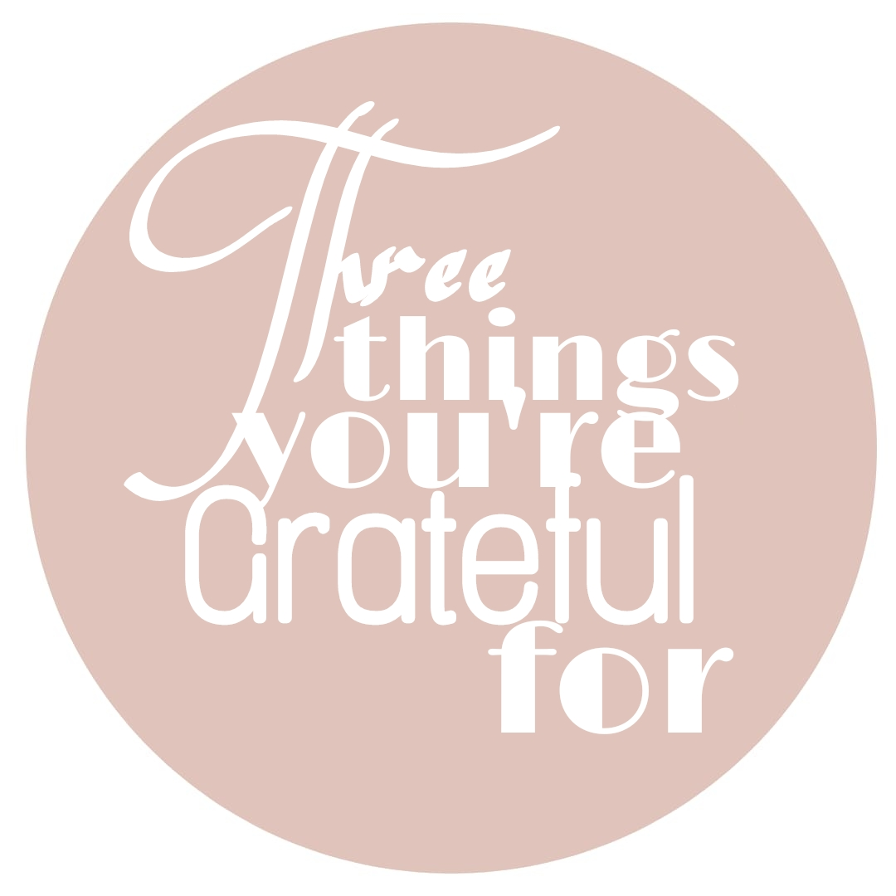
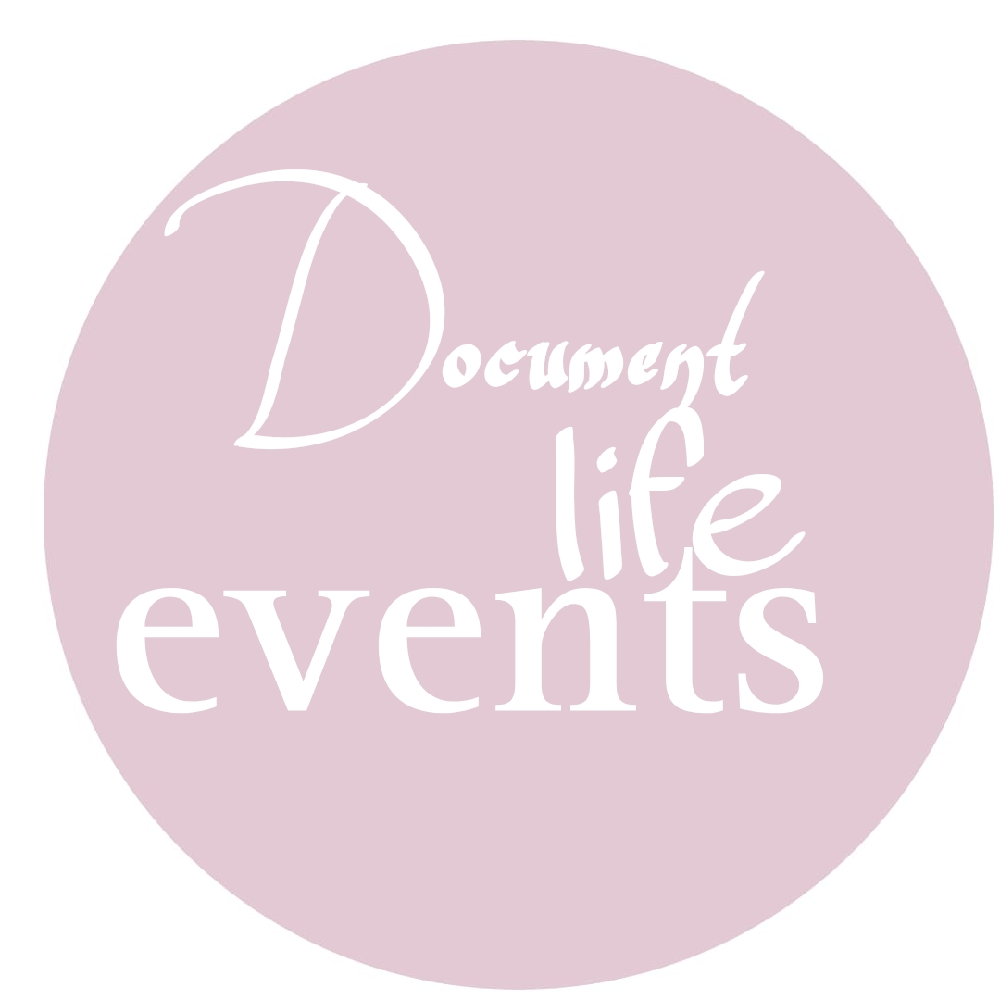
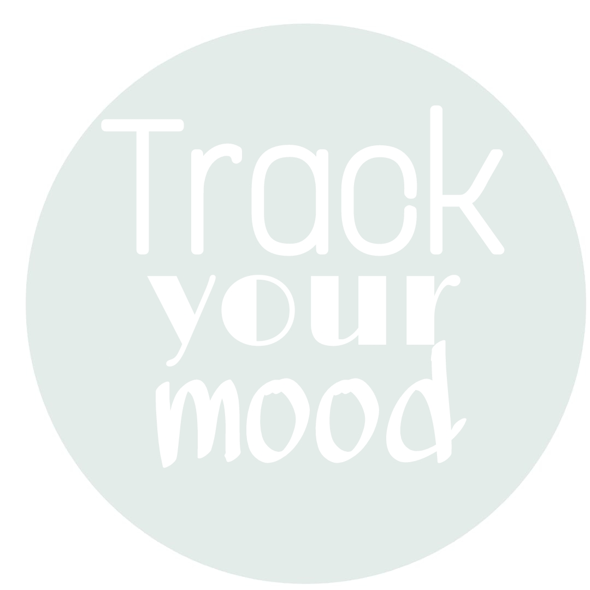

Here are some ideas for you

The best thing you can start with in the morning is to write
three things that you are grateful for. You can start looking for this if you would like to be positive . It's indeed one of the best ways to reflect on the blessings that you have , along
with that you will
learn to see the beauty of every situation.

Keeping a record of your day can be a great way to document your
life. You can write ordinary events , routines and conversations in you journal. One advatage is that it helps you recognize
the small details of your life , and perhaps help you to improve your routine and to motivate you to have an advanture from time to time.

You can implement this by filling a weekly table that tracks your mood by rating it from 1 to
5 , and writing the cause of that. Not only that this provides an analysis of the causes and triggeres of your moods , but also it helps you to be aware and careful about where to allocate your energy.